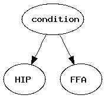
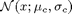
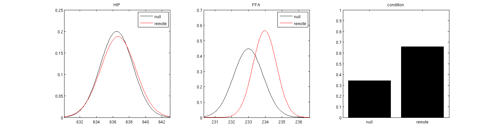
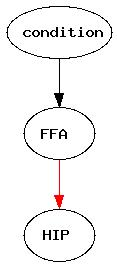

Building a static Bayesian network for fMRI analysis
In this particular example, we will construct a standard Bayesian network and demonstrate its use.
Copyright (C) 2008 Marcel van Gerven
Contents
Compare log likelihood of a Bayesian network before/after learning
function fmri_bn_demo()
Transform the volumes into data suitable for bayesbrain
% this gives us the averaged volumes of interest plus their labels % null versus remote [data,design] = read_data(); % at the moment just 3 vars; HIP, FFA, condition data = [data design];
processing trial 1 out of 25 for condition 1 processing trial 2 out of 25 for condition 1 processing trial 3 out of 25 for condition 1 processing trial 4 out of 25 for condition 1 processing trial 5 out of 25 for condition 1 processing trial 6 out of 25 for condition 1 processing trial 7 out of 25 for condition 1 processing trial 8 out of 25 for condition 1 processing trial 9 out of 25 for condition 1 processing trial 10 out of 25 for condition 1 processing trial 11 out of 25 for condition 1 processing trial 12 out of 25 for condition 1 processing trial 13 out of 25 for condition 1 processing trial 14 out of 25 for condition 1 processing trial 15 out of 25 for condition 1 processing trial 16 out of 25 for condition 1 processing trial 17 out of 25 for condition 1 processing trial 18 out of 25 for condition 1 processing trial 19 out of 25 for condition 1 processing trial 20 out of 25 for condition 1 processing trial 21 out of 25 for condition 1 processing trial 22 out of 25 for condition 1 processing trial 23 out of 25 for condition 1 processing trial 24 out of 25 for condition 1 processing trial 25 out of 25 for condition 1 processing trial 1 out of 48 for condition 2 processing trial 2 out of 48 for condition 2 processing trial 3 out of 48 for condition 2 processing trial 4 out of 48 for condition 2 processing trial 5 out of 48 for condition 2 processing trial 6 out of 48 for condition 2 processing trial 7 out of 48 for condition 2 processing trial 8 out of 48 for condition 2 processing trial 9 out of 48 for condition 2 processing trial 10 out of 48 for condition 2 processing trial 11 out of 48 for condition 2 processing trial 12 out of 48 for condition 2 processing trial 13 out of 48 for condition 2 processing trial 14 out of 48 for condition 2 processing trial 15 out of 48 for condition 2 processing trial 16 out of 48 for condition 2 processing trial 17 out of 48 for condition 2 processing trial 18 out of 48 for condition 2 processing trial 19 out of 48 for condition 2 processing trial 20 out of 48 for condition 2 processing trial 21 out of 48 for condition 2 processing trial 22 out of 48 for condition 2 processing trial 23 out of 48 for condition 2 processing trial 24 out of 48 for condition 2 processing trial 25 out of 48 for condition 2 processing trial 26 out of 48 for condition 2 processing trial 27 out of 48 for condition 2 processing trial 28 out of 48 for condition 2 processing trial 29 out of 48 for condition 2 processing trial 30 out of 48 for condition 2 processing trial 31 out of 48 for condition 2 processing trial 32 out of 48 for condition 2 processing trial 33 out of 48 for condition 2 processing trial 34 out of 48 for condition 2 processing trial 35 out of 48 for condition 2 processing trial 36 out of 48 for condition 2 processing trial 37 out of 48 for condition 2 processing trial 38 out of 48 for condition 2 processing trial 39 out of 48 for condition 2 processing trial 40 out of 48 for condition 2 processing trial 41 out of 48 for condition 2 processing trial 42 out of 48 for condition 2 processing trial 43 out of 48 for condition 2 processing trial 44 out of 48 for condition 2 processing trial 45 out of 48 for condition 2 processing trial 46 out of 48 for condition 2 processing trial 47 out of 48 for condition 2 processing trial 48 out of 48 for condition 2
Create the random variables; they should follow the data ordering
factors = cell(1,3);
factors{1} = gaussian_cpd(1,[],3,[0; 0],{[]; []},[1; 1]);
factors{2} = gaussian_cpd(2,[],3,[0; 0],{[]; []},[1; 1]);
factors{3} = multinomial_cpd(3,[],[0.5; 0.5]);
% optionally add names to the factors
factors{1}.name = 'HIP';
factors{2}.name = 'FFA';
factors{3}.name = 'condition';
factors{3}.statenames = {'null' 'remote'};
% Create simple bayes net
bn = bayesnet(factors);
Write graph structure to file (requires installation of GraphViz library)
bn.write('~/code/classification/toolboxes/bayesbrain/examples/html/fmribn1','dot','extension','jpg');
This is what the plot would look like

score of this model is pretty low before learning parameters
[ bn.loglik(data) bn.aic(data) bn.bic(data)]
ans = 1.0e+05 * -2.2992 -2.2993 -2.2993
Learn parameters from complete data
bn = bn.learn_parameters(data);
score has increased
s1 = [bn.loglik(data) bn.aic(data) bn.bic(data)]
s1 = -3.9984 -12.9984 -8.9421
Plot the estimated prior distributions with continuous ones of the form

subplot(1,3,1);
bn.factors{1}.plot();
legend('null','remote');
subplot(1,3,2);
bn.factors{2}.plot();
legend('null','remote');
subplot(1,3,3);
bn.factors{3}.plot();
set(gcf,'Position',[100 100 1500 400]);
 Let's compare with an alternative model!
Create the random variables; they should follow the data ordering
factors = cell(1,3);
factors{1} = gaussian_cpd(1,2,[],0,{0},1);
factors{2} = gaussian_cpd(2,[],3,[0; 0],{[]; []},[1; 1]);
factors{3} = multinomial_cpd(3,[],[0.5; 0.5]);
% optionally add names to the factors
factors{1}.name = 'HIP';
factors{2}.name = 'FFA';
factors{3}.name = 'condition';
factors{3}.statenames = {'null' 'remote'};
% Create simple bayes net
bn = bayesnet(factors);
Learn parameters from complete data
bn = bn.learn_parameters(data);
Write graph structure to file (requires installation of GraphViz library)
bn.write('~/code/classification/toolboxes/bayesbrain/examples/html/fmribn2','dot','extension','jpg');
This is what the plot would look like. Note the positive influence (red) of FFA BOLD response on HIP BOLD response!

We do better (but just a little bit...)
s2 = [bn.loglik(data) bn.aic(data) bn.bic(data)]
s2 = -3.9984 -11.9984 -8.3928
approximation of Bayes factor using BIC: very weak support for model 2
exp(s1(3) - s2(3)) % exp of log p(M1|D) - log p(M2|D)
ans =
0.5773
end
function [data,labels] = read_data() % voxel size vox = 5; % repetition time TR = 2.28; % averaging over multiple volumes conv = [0 0 0.33 0.33 0.33]; subject = 1; % subject index (10,12,21) subidcs = [10 12 21]; subidx = subidcs(subject); % subject name (NS, DV, TB) subnames = {'NS' 'DV' 'TB'}; subname = subnames{subject}; % move to appropriate data dir cd(sprintf('~/data/atsuko/S%d',subidx)); % img string: smoothed, warped, resliced (and coregistered), realigned data imgstr = sprintf('swarS%d%s_ret_',subidx,subname); % log string logstr = sprintf('S%d_ret.txt',subidx); % similar to Fieldtrip preproc [trialNo, cond, timeITIOn, timeFaceOn, pictCode, timeTargetHit, respLoc, ... correctTarget, HitMiss, RT, timeConfOn, TimeConfHit, conf]=textread(logstr,... '%d %d %f %f %8s %f %d %d %d %f %f %f %d','delimiter','\t'); trial = (1:length(trialNo))'; timeZero = timeITIOn(1); M = [trialNo, HitMiss, RT, respLoc, correctTarget, conf, timeFaceOn, cond, timeConfOn, TimeConfHit]; assert(size(M,1)==length(trial)) M(:,11) = (M(:,7)-timeZero)/1000; M(:,3) = M(:,3)/1000; % Remote remHit5 = find((HitMiss==1 & conf>4 & cond==1)); MremHit5 = M(remHit5,:); rremHit5 = MremHit5(:,11); % Recent recHit5 = find((HitMiss==1 & conf>4 & cond==2)); MrecHit5 = M(recHit5,:); rrecHit5 = MrecHit5(:,11); % Null findings Null = find(HitMiss==-1); MNull = M(Null,:); rNull = MNull(:,11); % try remote versus null for now onsets = cell(1,2); onsets{1} = rNull; %onsets{1} = rrecHit5; onsets{2} = rremHit5; % assume volumes are acquired continuously every 2.28 s onsets{1} = floor((onsets{1})/TR); onsets{2} = floor((onsets{2})/TR); data = []; labels = [ones(length(onsets{1}),1); 2*ones(length(onsets{2}),1)]; % iterate over each volume for the conditions idx = 1; for k=1:2 for j=1:length(onsets{k}) fprintf('processing trial %d out of %d for condition %d\n',j,length(onsets{k}),k); vslice = []; for m=1:length(conv) % read fMRI volume by computing img index fname = [imgstr sprintf('%03.0f',onsets{k}(j)+6+(m-1)) '.img']; hdr = spm_vol(fname); v = spm_read_vols(hdr); % average contributions if isempty(vslice) vslice = conv(m) * v; else vslice = vslice + conv(m) * v; end end if isempty(data), data = zeros(length(labels),numel(vslice)); end data(idx,:) = transpose(vslice(:)); idx = idx + 1; end end % extract masks to get Regions of Interest % alternatively we may want to use the SPM anatomy toolbox or MarsBar % to get ROIs from anatomical atlasses etc. % FSL can also be of relevance here % now we simply extract hippocampal and FFA regions % HIP mask cd('~/data/atsuko/hipmask'); hiphdr = spm_vol('hippocampus_AAL.hdr'); % transform mask cd(sprintf('~/data/atsuko/S%d',subidx)); load sn; % transformation stuff computed with transform_volumes cd('~/data/atsuko/hipmask'); hiphdr = spm_write_sn(hiphdr, sn, struct('preserve',0,'vox',[vox vox vox])); % creates w_ hipmask = spm_read_vols(hiphdr); hipmask(isnan(hipmask)) = 0; % cd back cd(sprintf('~/data/atsuko/S%d',subidx)); % FFA mask cd('~/data/atsuko/hipmask'); hiphdr = spm_vol('conjFFArem.nii'); % transform mask cd(sprintf('~/data/atsuko/S%d',subidx)); load sn; % transformation stuff computed with transform_volumes cd('~/data/atsuko/hipmask'); ffahdr = spm_write_sn(hiphdr, sn, struct('preserve',0,'vox',[vox vox vox])); % creates w_ ffamask = spm_read_vols(ffahdr); ffamask(isnan(ffamask)) = 0; % cd back cd(sprintf('~/data/atsuko/S%d',subidx)); % data will be average BOLD response in HIP and FFA areas d1 = mean(data(:,logical(hipmask)),2); d2 = mean(data(:,logical(ffamask)),2); data = [d1 d2]; end